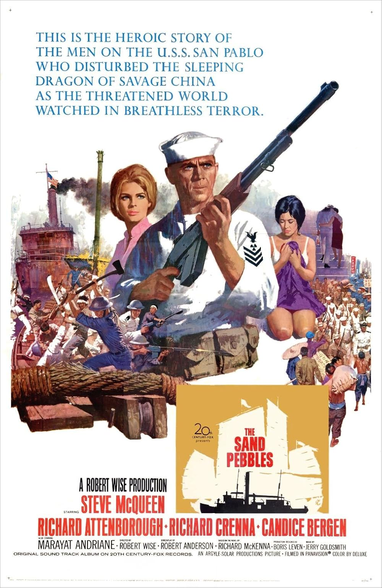

The Sand Pebbles
39th Academy Awards
(Oscars 1967)
8 Nominations, 0 Awards
| Nominations | ||
|---|---|---|
| Category | Nominees | Result |
| Best Picture | Robert Wise | Nominated |
| Actor | Steve McQueen | Nominated |
| Actor in a Supporting Role | Mako | Nominated |
| Cinematography (Color) | Joseph MacDonald | Nominated |
| Film Editing | William Reynolds | Nominated |
| Art Direction (Color) | Boris Leven, John Sturtevant, Walter M. Scott, and William Kiernan | Nominated |
| Sound | James P. Corcoran | Nominated |
| Music (Original Music Score) | Jerry Goldsmith | Nominated |